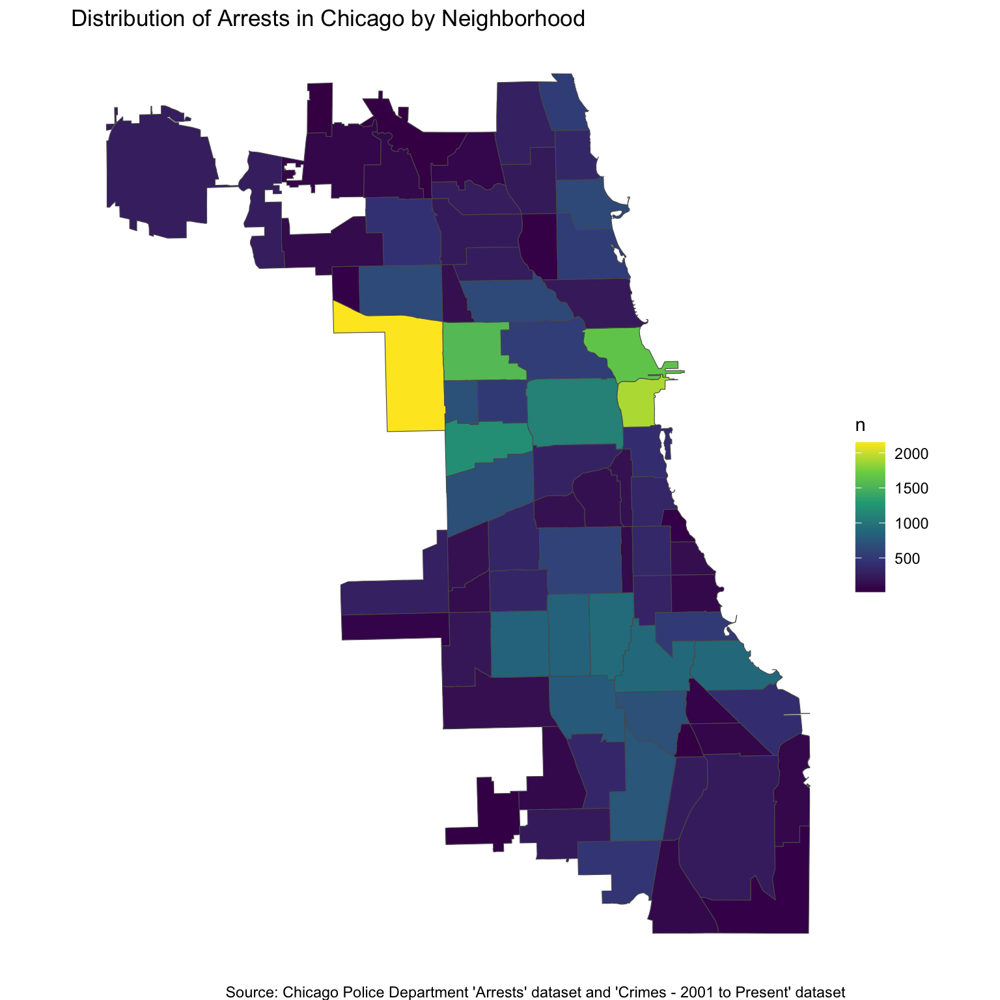
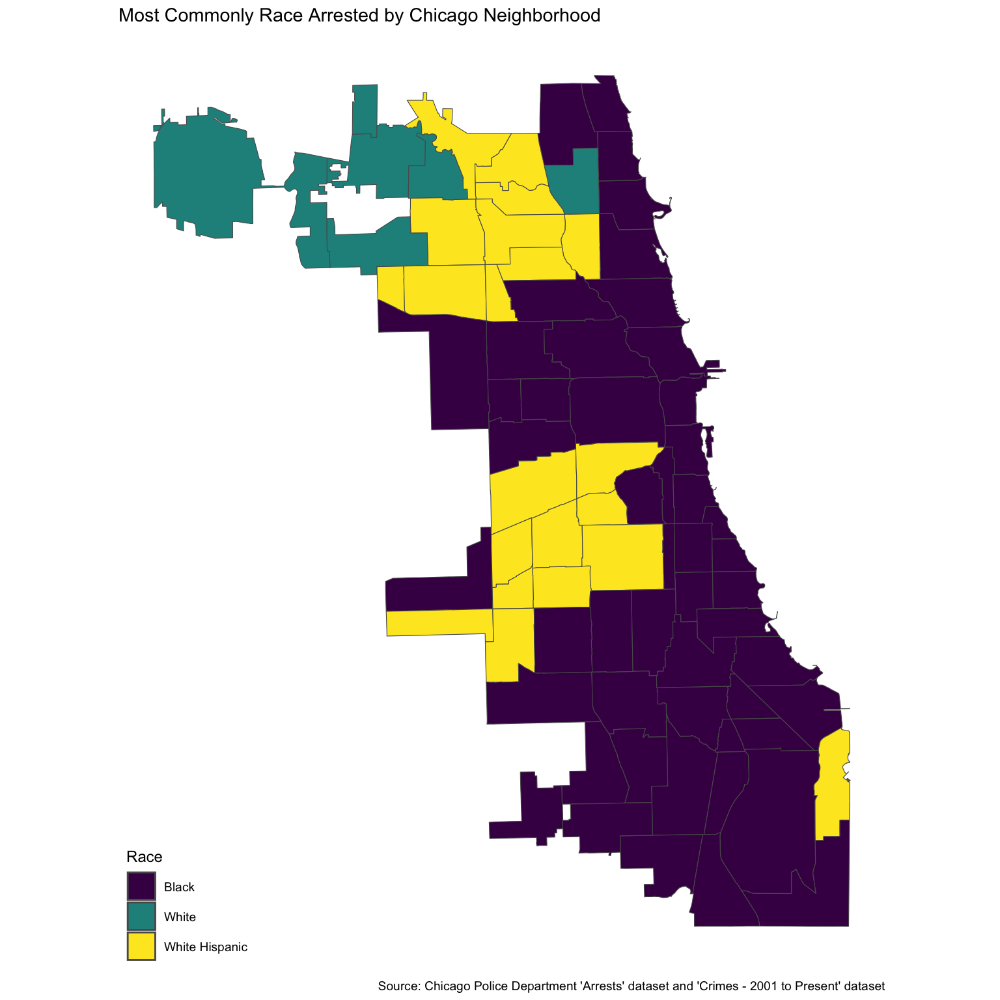
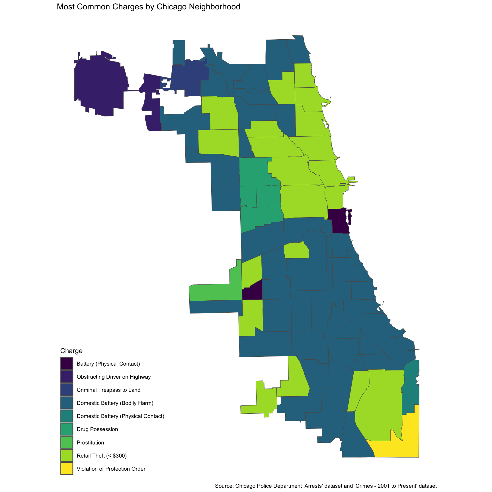

Solo Project
Reading layer `igwz-8jzy' from data source
`https://data.cityofchicago.org/resource/igwz-8jzy.geojson'
using driver `GeoJSON'
Simple feature collection with 77 features and 5 fields
Geometry type: MULTIPOLYGON
Dimension: XY
Bounding box: xmin: -87.94011 ymin: 41.64454 xmax: -87.52414 ymax: 42.02304
Geodetic CRS: WGS 84Code
arrests_sf <- st_as_sf(arrests, coords = c("LONGITUDE", "LATITUDE"), crs = 4326)
arrests_sf <- st_transform(arrests_sf, st_crs(chicago_neighborhood))
arrests_by_neighborhood <- arrests_sf |>
st_join(chicago_neighborhood) |>
count(community)
arrests_by_neighborhood_no_geom <- st_drop_geometry(arrests_by_neighborhood)
chicago_with_arrests <- chicago_neighborhood |>
left_join(arrests_by_neighborhood_no_geom, by = "community")Code
500. One neighborhood in the northwest of Chicago reached the highest number of arrests, at about 2000." width="768">
Reflection:
Code
arrests_sf <- arrests_sf |>
mutate(`RACE` = as.factor(`RACE`))
arrests_sf <- arrests_sf |>
mutate(`RACE` = fct_recode(`RACE`,
"Black" = "BLACK",
"White" = "WHITE",
"White Hispanic" = "WHITE HISPANIC"
))
arrests_with_neighborhood <- arrests_sf |>
st_join(chicago_neighborhood)
race_by_neighborhood <- arrests_with_neighborhood |>
st_drop_geometry() |>
count(community, `RACE`) |>
group_by(community) |>
slice_max(n, n = 1, with_ties = FALSE) |>
ungroup()
chicago_race_map <- chicago_neighborhood |>
left_join(race_by_neighborhood, by = "community")Code

Reflection
Chicago has a long history of racism and segregation, and this choropleth map intended to explore the concrete effects of such historical and institutional discrimination. It is clear that Black people are disproportionately arrested, as the majority of neighborhoods arrest Black people the most despite making up approximately 28% of the population. White Hispanic people were arrested the second most in Chicago neighborhoods, mostly on the West and Northwest parts of the city. White people were arrested the third most, and only in the Northwest area of Chicago. This choropleth map is only a beginning exploratory measure, and further analysis should be done to determine the intricacies of Chicago’s racist behaviors.
Code
arrests_sf <- arrests_sf |>
mutate(`CHARGES DESCRIPTION` = as.factor(`CHARGES DESCRIPTION`))
arrests_sf <- arrests_sf |>
mutate(`CHARGES DESCRIPTION` = fct_recode(`CHARGES DESCRIPTION`,
"Battery (Physical Contact)" = "BATTERY - MAKE PHYSICAL CONTACT | | |",
"Obstructing Driver on Highway" = "CRIM TRESPASS TO STATE LAND | DISORDERLY CONDUCT - BREACH OF PEACE | IVC - OBSTRUCTING DRIVER ON HIGHWAY |",
"Criminal Trespass to Land" = "CRIMINAL TRESPASS TO LAND | | |",
"Domestic Battery (Bodily Harm)" = "DOMESTIC BATTERY/BODILY HARM | | |",
"Domestic Battery (Physical Contact)" = "DOMESTIC BTRY/PHYSICAL CONTACT | | |",
"Drug Possession" = "PCS - POSSESSION - POSS AMT CON SUB EXCEPT (A)(D) | | |",
"Prostitution" = "PROSTITUTION | | |",
"Retail Theft (< $300)" = "RETAIL THEFT/DISP MERCH/<$300 | | |",
"Violation of Protection Order" = "VIOLATE ORDER PROTECTION | | |"
))
charges_by_neighborhood <- arrests_sf |>
st_join(chicago_neighborhood) |>
st_drop_geometry() |>
count(community, `CHARGES DESCRIPTION`) |>
group_by(community) |>
slice_max(n, n = 1, with_ties = FALSE) |>
ungroup()
chicago_charges_map <- chicago_neighborhood |>
left_join(charges_by_neighborhood, by = "community") Code
$300) is the next most common charge description, although it is mostly concentrated in the northeast of Chicago. There are nine charge descriptions total, which reflect the most common types of crimes of each neighborhood, although the other seven charges are only the most common in one or so neighborhoods." width="864">